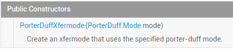
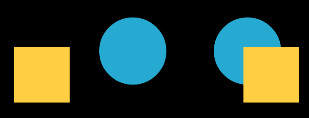

本節の導入：
前の節では、Xfermodeの2つのすでに世を去った（時代遅れの）息子たちを学びました：AvoidXfermode， PixelXorXfermode、確かに多少は役に立つが、結局は廃止されてしまいました。この節では、Xfermodeのまだ健在の三男を学びましょう：PorterDuffXfermode；
まず公式APIドキュメントを紹介します：PorterDuffXfermode！ドキュメントの内容は非常に少なく、そのコンストラクタを見ることができます：

引数は一つだけです：PorterDuff.Modemode。Androidは16種類の画像混合モードを提供しています。簡単に言うと、2つのレイヤーを異なるモードで組み合わせることで、異なる結果を表示できるということです！16種類の混合モードの結果図は以下の通りです：
ここでの2つのレイヤー：最初に描画される画像は描画先画像（DST）、後から描画される画像はソース画像（SRC）！
もちろん、ドキュメントでは利用可能なモードは16種ではなく18種で、新たに追加されたのはADDとOVERLAY2つのモードです！
うーん、言っても仕方ない、コードが一番実際的です。この節では、コードを書いてこの18種類のモードを検証しましょう！
PS: このPorterDuffという命名は実は2人の人物名の組み合わせです：Tomas ProterとTom Duffから構成されています。彼らは最も早くSIGGRAPHでグラフィック混合の概念を提唱した大物級の人物で、興味があれば各自で百度（Baidu）で調べてください。

上の図を検証する例を書いてみましょう：
では、上の図を検証する例を書いてみましょう。異なるモードを変更することで、結果を比較分析します！
コード実装：
Step 1：まず画面の幅と高さを取得するユーティリティクラスを書きましょう！ScreenUtil.java：
/**
* Created by Jay on 2015/10/23 0023.
*/
public class ScreenUtil {
/**
* 获取屏幕宽高，sdk17后不建议采用
*
* @param context
*/
public static int[] getScreenHW(Context context) {
WindowManager manager = (WindowManager) context.getSystemService(Context.WINDOW_SERVICE);
Display display = manager.getDefaultDisplay();
int width = display.getWidth();
int height = display.getHeight();
int[] HW = new int[] { width, height };
return HW;
}
/**
* 获取屏幕宽高，建议采用
*
* @param context
*/
public static int[] getScreenHW2(Context context) {
WindowManager manager = (WindowManager) context.getSystemService(Context.WINDOW_SERVICE);
DisplayMetrics dm = new DisplayMetrics();
manager.getDefaultDisplay().getMetrics(dm);
int width = dm.widthPixels;
int height = dm.heightPixels;
int[] HW = new int[] { width, height };
return HW;
}
/**
* 获取屏幕的宽度
*
* @param context
* @return
*/
public static int getScreenW(Context context) {
return getScreenHW2(context)[0];
}
/**
* 获取屏幕的高度
*
* @param context
* @return
*/
public static int getScreenH(Context context) {
return getScreenHW2(context)[1];
}
}
ステップ2：カスタムViewクラスを書いて、ここで実験をします！XfermodeView.java：
/**
* Created by Jay on 2015/10/23 0023.
*/
public class XfermodeView extends View {
private PorterDuffXfermode pdXfermode; //定义PorterDuffXfermode变量
//定义MODE常量，等下直接改这里即可进行测试
private static PorterDuff.Mode PD_MODE = PorterDuff.Mode.ADD;
private int screenW, screenH; //屏幕宽高
private int width = 200; //绘制的图片宽高
private int height = 200;
private Bitmap srcBitmap, dstBitmap; //上层SRC的Bitmap和下层Dst的Bitmap
public XfermodeView(Context context) {
this(context, null);
}
public XfermodeView(Context context, AttributeSet attrs) {
super(context, attrs);
screenW = ScreenUtil.getScreenW(context);
screenH = ScreenUtil.getScreenH(context);
//创建一个PorterDuffXfermode对象
pdXfermode = new PorterDuffXfermode(PD_MODE);
//实例化两个Bitmap
srcBitmap = makeSrc(width, height);
dstBitmap = makeDst(width, height);
}
public XfermodeView(Context context, AttributeSet attrs, int defStyleAttr) {
super(context, attrs, defStyleAttr);
}
//定义一个绘制圆形Bitmap的方法
private Bitmap makeDst(int w, int h) {
Bitmap bm = Bitmap.createBitmap(w, h, Bitmap.Config.ARGB_8888);
Canvas c = new Canvas(bm);
Paint p = new Paint(Paint.ANTI_ALIAS_FLAG);
p.setColor(0xFF26AAD1);
c.drawOval(new RectF(0, 0, w * 3 / 4, h * 3 / 4), p);
return bm;
}
//定义一个绘制矩形的Bitmap的方法
private Bitmap makeSrc(int w, int h) {
Bitmap bm = Bitmap.createBitmap(w, h, Bitmap.Config.ARGB_8888);
Canvas c = new Canvas(bm);
Paint p = new Paint(Paint.ANTI_ALIAS_FLAG);
p.setColor(0xFFFFCE43);
c.drawRect(w / 3, h / 3, w * 19 / 20, h * 19 / 20, p);
return bm;
}
@Override
protected void onDraw(Canvas canvas) {
Paint paint = new Paint();
paint.setFilterBitmap(false);
paint.setStyle(Paint.Style.FILL);
canvas.drawBitmap(srcBitmap, (screenW / 3 - width) / 2, (screenH / 2 - height) / 2, paint);
canvas.drawBitmap(dstBitmap, (screenW / 3 - width) / 2 + screenW / 3, (screenH / 2 - height) / 2, paint);
//创建一个图层，在图层上演示图形混合后的效果
int sc = canvas.saveLayer(0, 0, screenW, screenH, null, Canvas.MATRIX_SAVE_FLAG |
Canvas.CLIP_SAVE_FLAG |
Canvas.HAS_ALPHA_LAYER_SAVE_FLAG |
Canvas.FULL_COLOR_LAYER_SAVE_FLAG |
Canvas.CLIP_TO_LAYER_SAVE_FLAG);
canvas.drawBitmap(dstBitmap, (screenW / 3 - width) / 2 + screenW / 3 * 2,
(screenH / 2 - height) / 2, paint); //绘制i
//设置Paint的Xfermode
paint.setXfermode(pdXfermode);
canvas.drawBitmap(srcBitmap, (screenW / 3 - width) / 2 + screenW / 3 * 2,
(screenH / 2 - height) / 2, paint);
paint.setXfermode(null);
// 还原画布
canvas.restoreToCount(sc);
}
}
コードは複雑に見えますか？実はそうでもなく、単に画面の幅と高さを取得し、長方形と円を1つずつ描き、それらの位置を計算し、レイヤーを設定し（決まった書き方）、次にペン（Paint）のsetXfermodeを設定し、canvasに描画しているだけです。分からないかもしれないのは描画位置の計算ですが、実はそうでもなく、位置は好きに決めてOKです！それでは、一つずつ結果を見ていきましょう。あなたはただPD_MODEの値を異なるモードに設定するだけです！
実行結果図：
1）PorterDuff.Mode.ADD：
彩度オーバーレイ
2）PorterDuff.Mode.CLEAR：
描画したものはキャンバスにコミットされず、うーん結果...なぜか分かりませんが、通常は何もない状態です..
3）PorterDuff.Mode.DARKEN：
2つのレイヤーの全領域を取得し、交差部分の色を濃くします
4）PorterDuff.Mode.DST：
描画先画像（DST）のalphaとcolorだけを保持するので、描画されるのは描画先画像だけです
5）PorterDuff.Mode.DST_ATOP：
ソース画像と描画先画像が交差する部分は描画先画像を描画し、交差しない部分はソース画像を描画します
6）PorterDuff.Mode.DST_IN：
両者が交差する部分は描画先画像を描画しますが、描画効果は元の画像の透明度の影響を受けます
7）PorterDuff.Mode.DST_OUT：
交差しない部分に描画先画像を描画します
8）PorterDuff.Mode.DST_OVER：
描画先画像を上に描画します
9）PorterDuff.Mode.LIGHTEN：
2つのレイヤーの全領域を取得し、交差部分の色を明るくします
10）PorterDuff.Mode.MULTIPLY：
2つのレイヤーの交差部分をオーバーレイした後の色を取得します
11）PorterDuff.Mode.OVERLAY：

オーバーレイ12）PorterDuff.Mode.SCREEN：
2つのレイヤーの全領域を取得し、交差部分を透明色にします
13）PorterDuff.Mode.SRC：
ソース画像のalphaとcolorだけを保持するので、描画されるのはソース画像だけです
14）PorterDuff.Mode.SRC_ATOP：
ソース画像と描画先画像が交差する部分はソース画像を描画し、交差しない部分は描画先画像を描画します
15）PorterDuff.Mode.SRC_IN：
両者が交差する部分にソース画像を描画します
16）PorterDuff.Mode.SRC_OUT：
交差しない部分にソース画像を描画します
17）PorterDuff.Mode.SRC_OVER：
ソース画像を上に描画します
18）PorterDuff.Mode.XOR：
交差しない部分は元のままソース画像と描画先画像を描画します
本節のサンプルコードのダウンロード：
本節のまとめ：
うーん、この節では簡単なViewを書いて、これら18種類の異なるPorterDuff.Modeの異なる効果を検証しました。へへ、かなり時間がかかりましたが、読者にはきっとずっと分かりやすくなったでしょう？もちろん、これはほんの初期の見解にすぎません！
PorterDuffXfermodeのPorterDuff.ModeカスタムViewにとって非常に重要です！この節では初歩的な理解を得ました。次の節ではいくつか例を選んで練習しましょう！
PorterDuff.Modeについてより詳しい紹介を見たい場合は、ここを参照してください：Android PaintのsetXfermode PorterDuffXfermode 解説、他の人が書いたなかなか良い記事です！うーん、ここまでにします。明日の朝は健康診断なので、今日はこのくらい書きます。